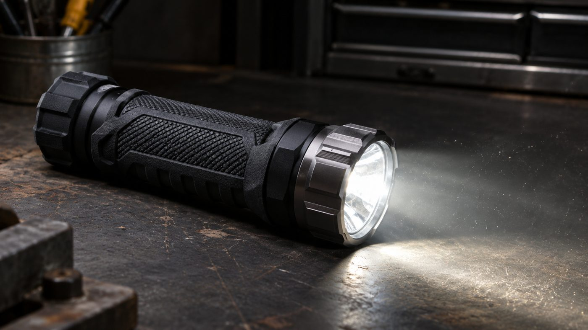

F01
Comprender el encargo CIMATEX
Identifica qué necesita el cliente y qué condiciones todavía faltan por concretar.
Guía del segundo proyecto
Elige la ficha que estás haciendo. Abre la hoja de trabajo y consulta su guía al lado: encontrarás qué necesitas, qué hacer en cada apartado y cómo revisar tu respuesta.
F01 · Abre la portada de la carpeta para leer el correo del cliente.

Un encargo · elegir material Observa. Compara. Decide.Las fichas F01–F10 tienen guía propia.
Identifica qué necesita el cliente y qué condiciones todavía faltan por concretar.
Compara etiquetas, certificados, promesas comerciales e informes de ensayo.
Ordena una investigación y utiliza datos preparados para justificar una conclusión.
Describe materiales, clasifica propiedades y relaciona necesidades con características.
Dibuja partículas en los tres estados y explica qué cambia al aumentar la temperatura.
Consulta la tabla periódica y representa electrones con el modelo indicado en la ficha.
Compara los modelos metálico, iónico y covalente y aplícalos a ejemplos de materiales.
Cuenta átomos, distingue sustancias y separa la fórmula de la cantidad de muestra.
Equilibra las cargas de los iones y practica el camino de la fórmula al nombre.
Prepara un protocolo para comparar la deformación de materiales bajo la misma carga.